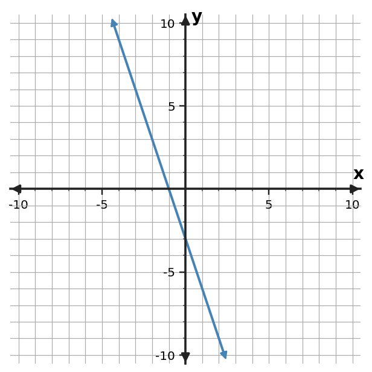
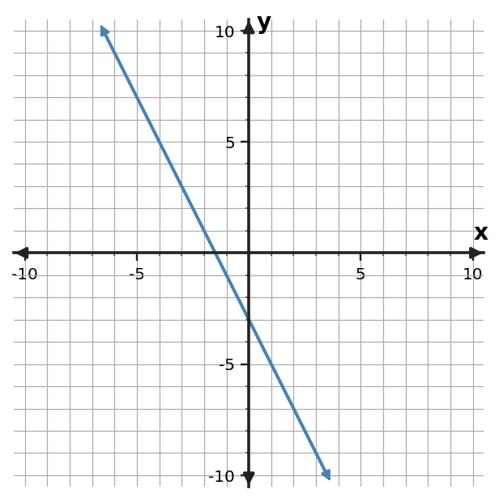

Algebra Practice 2.3
1. Write a linear equation in slope-intercept form for the line through $(0,-4)$ and $(3,5)$.
2. Write a linear equation in slope-intercept form for the line through $(1,-3)$ and $(4,-6)$.
3. Write a linear equation in slope-intercept form for the line through $(2,-2)$ and $(6,6)$.
4. Write an equation in slope-intercept form for the relationship in the table.
| $x$ | $y$ |
|---|---|
| $-2$ | $9$ |
| $0$ | $1$ |
| $2$ | $-7$ |
| $4$ | $-15$ |
5. Write an equation in slope-intercept form for the relationship in the table.
| $x$ | $y$ |
|---|---|
| $-2$ | $-3$ |
| $0$ | $1$ |
| $2$ | $5$ |
| $4$ | $9$ |
6. Write an equation in slope-intercept form for the relationship in the table.
| $x$ | $y$ |
|---|---|
| $-2$ | $-9$ |
| $0$ | $-5$ |
| $2$ | $-1$ |
| $4$ | $3$ |
7. Write an equation in slope-intercept form for the graphed line. Use graph features as evidence.

8. Write an equation in slope-intercept form for the graphed line. Use graph features as evidence.

9. Write an equation in slope-intercept form for the graphed line. Use graph features as evidence.

10. A student has 25 dollars and saves 7 dollars each week. Let $w$ be weeks and $S$ be savings. Write $S$ as a function of $w$. Identify the weekly change and the starting savings.
11. A tank starts with 27 liters and drains 5 liters each minute. Let $t$ be minutes and $V$ be volume. Write $V$ as a function of $t$. Identify the change and starting volume.
12. A candle is 22 cm tall and burns down 2 cm each hour. Let $h$ be hours and $H$ be height. Write $H$ as a function of $h$. Identify the hourly change and the initial height.
13. For $y=x+2$, explain the roles of $m$ and $b$. Then give one ordered pair that must lie on the line.
14. For $y=4x-3$, explain the roles of $m$ and $b$. Then give one ordered pair that must lie on the line.
15. For $y=3x+5$, explain the roles of $m$ and $b$. Then give one ordered pair that must lie on the line.
16. A linear relationship is represented by $y=2x+3$. Write a different equation that is equivalent to it after moving all terms to one side, and verify that $(6,15)$ satisfies both forms.
17. A linear relationship is represented by $y=-2x+3$. Write a different equation that is equivalent to it after moving all terms to one side, and verify that $(6,-9)$ satisfies both forms.
18. A linear relationship is represented by $y=-2x-1$. Write a different equation that is equivalent to it after moving all terms to one side, and verify that $(3,-7)$ satisfies both forms.
19. Rewrite $3(x+2)$ as an equivalent expression, then verify equivalence at $x=4$.
20. Rewrite $2(x-5)$ as an equivalent expression, then verify equivalence at $x=3$.
21. Rewrite $-2(x+6)$ as an equivalent expression, then verify equivalence at $x=-1$.
22. Write a linear equation for the table and state the slope and starting value.
| $x$ | $y$ |
|---|---|
| $0$ | $1$ |
| $2$ | $5$ |
| $4$ | $9$ |
23. Write a linear equation for the table and state the slope and starting value.
| $x$ | $y$ |
|---|---|
| $0$ | $5$ |
| $2$ | $3$ |
| $4$ | $1$ |
24. Write a linear equation for the table and state the slope and starting value.
| $x$ | $y$ |
|---|---|
| $0$ | $-3$ |
| $2$ | $-2$ |
| $4$ | $-1$ |